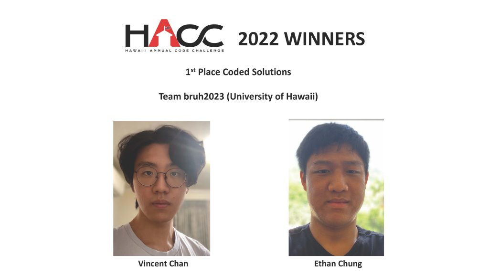

Hawaii Annual Code Challenge 2022 - 1st Place Winner

ets-url-shortener is a web application that was co-developed with Vincent Chan for the Hawaii Annual Code Challenge in 2022. This proof-of-concept website was developed for Hawaii’s Office of Enterprise Technology Services to create a secure way for state workers to share and distribute short URLs without relying on third-party link shorteners, which can be prone to malware. This includes passwordless logins through Single-Sign On, customizable short URLs, authentication-gated short URLs, redirection timer for URL screening, powerful analytics through Google Analytics, and more.
Rationale
Sharing of links has always been a common attack vector for malicious actors, and can easily lead to entire networks of computers being compromised. Attacks like these are usually known as phising attacks, where an employee clicks on a presumably trustworthy link from a presumably trustworthy email, and unknowingly grants the hacker access to their computers. Not even Google has been safe from these attacks – see Operation Aurora.
Although some malicious links are easily recognizable, third-party link shortening services can hide malicious links behind a familiar domain, such as bit.ly or tinyurl.com, and makes it difficult to tell friend from foe. By using an official first-party URL shortener with built-in security features, links can be shared through a trustworthy domain designated by the state, and state workers can safely distribute information.
Team
Vincent and I both shared a part in the prototyping and development of the website, along with deciding the tech stack that we would use to build the website. As we were both beginners, we opted to chose popular frameworks like React and Firebase, which has a large community surrounding it. We learned how to prototype and design a website in Figma, develop a website using React and using open-source packages to help create components, and finally using Firebase to host, authenticate, and store data for the website.
Out of the fourty-four teams that participated in the challenge, our team brought first place for the “Coded Solutions” category.

Future Improvements
A variety of improvements can be made to improve the user experience of users. This is a short list of ideas that could be implemented in the future.
- Adding an intuitive admin panel to manage everyone’s links without having to go through it manually through the database.
- Making the website feel more responsive with animations. This would not affect the functionality of the website, but would improve the user experience greatly.
- Add a button to allow users to see analytics for their URLs. Currently, analytics can only be seen by admins.
More information
The best place to obtain more information is through our devpost page. This page goes over what the goal of the website is for, how we built it, the challenges that we ran into, accomplishments that we are proud of, and what we learned.
The challenge instructions can be viewed here.
- Instructions: https://hacc.hawaii.gov/wp-content/uploads/2022/10/HACC-2022-ETS-CyberSecurity_Small-URL-Challenge.pdf
Our presentation deck can be viewed here.
We presented these slides for Judging day. You can view the recording here.
- Judging Day Video (timestamped): https://youtu.be/MuE_kc3teeU?t=3828
Source Code & Demo
This code is not maintained, and thus the demo is not guaranteed to work.